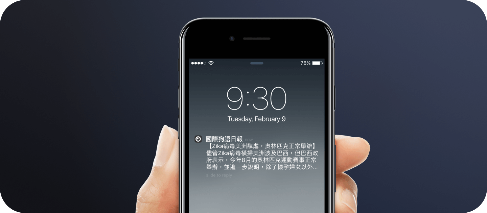

Designed and built the product, 2015
Ever since I started to design apps two years ago, I’d always had the thought of making an app by myself. I did try, but Object-C was too complicated for me and I wasn’t sure what kind of app I wanted to make. Util Apple released Swift and encouraged by my friend Kimie and MengTo, I made my second attempt and that's how I started to make Push News.
If you’ve ever watched news in Taiwan, you’d notice that there seem to be less international news. Medium in Taiwan seldom cover important news happening worldwide. You can go to the internet and look for international news. But most people doesn’t do this.
As people are starting to use and be addicted to smartphones, news medium started to release their news apps to own the share of the users’ time on smartphones. One of the most important thing for companies is revenue. So most of the news is topical and can arouse people’s attention. International news is not the best choice in Taiwan as people used not to care about what happened around the world. I installed almost all Taiwan news app and found out that these apps alwasy push garbages to me. I don’t give damn sh*t about which celebrity is getting married or having an affair. I was so sick of this.
There was a protest called Sunflower Student Movement in Taiwan during March 2014. It happened because of the unfair trading policies between two countries, Taiwan and China. And after this movement, many people realized that one of the reasons Taiwan people are always deceived by the goverment is because people don’t know what’s happening around the world. Many people started to voluntarily translate the international news from English to Chinese and post them onto facebook. I was so trilled to see this. I said to myself why don’t I just work with these people and create the app I want for myself!
I wasn’t so sure that I can make this. I can make a website with some front-end skills. But making an app seems like a totally different thing. However, if you never try, you’ll never know. So I decided to give a shot.
The target was to help spread the international news to people who can’t/don’t read English. Since people are not used to read international news, this app must be as simple as possible. With this idea, I designed an extremely simple app. The main task of the app is to push one or two news a day and users can enter the app to see more detailed news. If users don’t enter the app and read the news, they can at least know what’s happening around the world by the glance of the notifications on the lockscreen. The app will be extremely light-weight to avoid making users feel overwhelmed with endless unread news.
After designing the basic parts of the app, I started to find the resources I may need to build this small app. It’s great that there are so many resources on the internet and some of them are targeting designers who want to learn how to code like me. To convince myself that I can do this, I tried to build simple things in the beginning.
It went well at first with following the examples. But as I dug deeper, I got to face so many problems and bugs I couldn’t solve. One of the example was pushing notifications with iOS. There are many complicated things you have to complete for pushing notifications to your phone. I spent nights dealing with it but got no clue what went wrong. And when I finally succeeded to make a push notification, I felt like crying and twitted it immediately. This kind of tortures kept going during the time of making this app. After 3 months of hard work at nights, I finally finished this app. Now, it’s on the app store.
